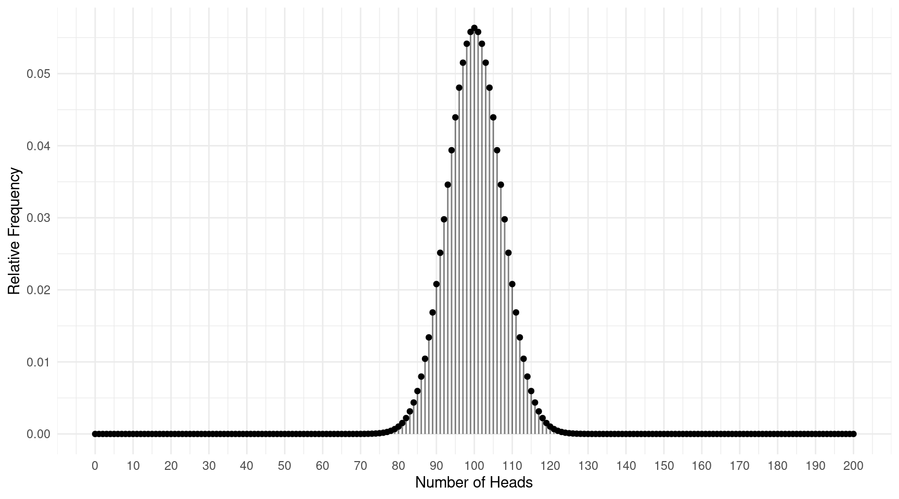

Friday, Jan 20
You can also download a PDF copy of this lecture.
Normal (“Bell-Shaped”) Distributions
Example: Consider the distribution of the observations of the heights of Hobbits from the East and West Farthings.
For Hobbits from the East Farthing the mean and standard deviation would be about 1.1 and 0.2 meters, respectively.
For Hobbits from the West Farthing the mean and standard deviation would be about 0.9 and 0.1 meters, respectively.
Also those distributions would be approximately normal or bell-shaped (or sometimes Gaussian).
Relationship with Mean and Standard Deviation
The shape of a normal distribution is related to its mean and standard deviation.
The mean is located where the (relative) frequency is at its peak.
The standard deviation is the distance from the mean to the value of the variable where the (relative) frequency is a little more than half way (actually about 61%) to its maximum.
Example: Consider the distributions of the heights
of Hobbits from the East and West Farthings.

Example: Suppose that the distribution of Hobbit height for Hobbits from the North Farthing is normal in shape with a mean of 1 meter and a standard deviation of 0.2 meters. What would this look like?
The “Empirical Rule” for Normal Distributions
If a distribution is normal then we know the following.
- Approximately 68% of observations are within one standard deviation of the mean.
- Approximately 95% of observations are within two standard deviations of the mean.
- Approximately 100% of observations are within three standard deviations of the mean.
Example: Where are the middle 95% of observations of the heights of Hobbits from the East Farthing?
Example: Where are the middle 95% of observations of the heights of Hobbits from the West Farthing?
The percents stated in the empirical rule are based on percentiles.
Example: Suppose I flipped a coin 200 times and observed the number of times it came up heads. Now suppose I did this many thousands of times to get a sample of observations of the number of times the coin comes up heads when flipped 200 times. The plot below shows the distribution of the number of times the coin comes up heads out of 200 flips.  This distribution is clearly normal in shape, and it has a mean of 100 and a standard deviation of approximately 7. What does the empirical rule tell us about where we would expect (or not expect) about the number of heads out of 200 flips?
Standard Scores (i.e., z-Scores)
A \(z\)-score is computed as \[ z = \frac{x - \bar{x}}{s}. \] It is the number of standard deviations \(x\) is above (if \(z\) > 0) or below (if \(z\) < 0) the mean.
Example: Ingitrude Proudfoot is from the East Farthing. They are 1.4 meters tall. Merimac Lightfoot is from the West Farthing. They are 1.1 meters tall. Who is taller relative to the Hobbits in their Farthing?
Example: Two Hobbits, one from the East Farthing and the other from the West Farthing, are both 0.4 meters above average relative to the Hobbits from their Farthing. Which Hobbit is taller relative to the Hobbits from their Farthing?
Example: Consider again the sample of coin flips, but now suppose that we look at the proportion of flips that come up heads, and we do so out of 100 flips and again out of 400 flips. The distribution for 100 flips has a mean of 0.5 and a standard deviation of 0.05, while the distribution of 400 flips has a mean of 0.5 and a standard deviation of 0.025. What is the \(z\)-score for each distribution if we observe that the coin comes up heads on 55% of the trials (i.e., a proportion of 0.55)?